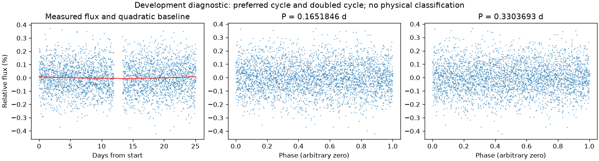
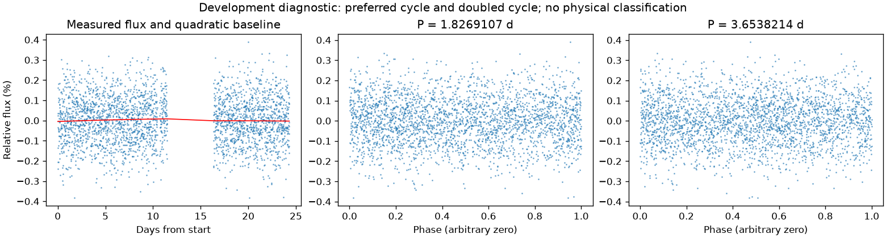

并非所有时段都支持重复变化
第三版周期：None 天；状态：not_established。

左图红线是缓慢基线；右面两图去除该基线。若未通过周期要求，两图只展示得分最高的竞争解释。
| 竞争周期（天） | 预测方法与改善 | 各组改善 | 通过初筛 |
|---|---|---|---|
| 0.1651846 | 交替循环：-1.4% | -1.5% / -1.2% | 否 |
| 0.1036522 | 交替循环：-1.6% | -1.0% / -2.3% | 否 |
| 0.0518164 | 交替循环：-1.8% | -1.0% / -2.7% | 否 |
| 0.3628665 | 交替循环：-2.0% | -0.8% / -3.3% | 否 |
| 0.0510608 | 交替循环：-3.2% | -2.8% / -3.6% | 否 |
| 0.1020820 | 交替循环：-3.4% | -4.2% / -2.7% | 否 |
| 0.0826504 | 交替循环：-3.8% | -4.1% / -3.5% | 否 |
| 0.1814963 | 交替循环：-3.9% | -3.5% / -4.2% | 否 |
“预测改善”衡量用一组周期的形状预测另一组，比只有缓慢基线好多少；负数表示更差。搜索和预测共用了资料，因此这不是可信概率，也不是独立验证。
第三版周期：None 天；状态：not_established。

左图红线是缓慢基线；右面两图去除该基线。若未通过周期要求，两图只展示得分最高的竞争解释。
| 竞争周期（天） | 预测方法与改善 | 各组改善 | 通过初筛 |
|---|---|---|---|
| 1.8269107 | 交替循环：-0.7% | 0.1% / -1.6% | 否 |
| 0.9226398 | 交替循环：-0.9% | -0.6% / -1.2% | 否 |
| 0.0663226 | 交替循环：-3.0% | -2.8% / -3.1% | 否 |
| 0.1773335 | 交替循环：-3.4% | -4.0% / -2.8% | 否 |
| 0.3036578 | 交替循环：-3.6% | -5.2% / -2.1% | 否 |
| 0.0886696 | 交替循环：-3.7% | -3.8% / -3.6% | 否 |
| 3.6469991 | 交替循环：-4.3% | -5.1% / -3.1% | 否 |
| 0.1329205 | 交替循环：-4.4% | -4.1% / -4.7% | 否 |
“预测改善”衡量用一组周期的形状预测另一组，比只有缓慢基线好多少；负数表示更差。搜索和预测共用了资料，因此这不是可信概率，也不是独立验证。